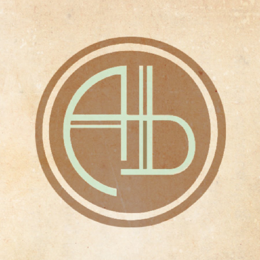
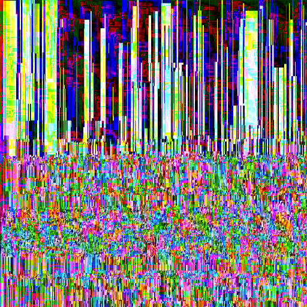

Developers.

Rachel Baker
Creative Director, Lead artist
Chris Read
Programmer, Technical Programmer

Kieran Mckay
Programmer, Level Designer, Play Tester
Cameron Watson
Technical Artist, Interaction Designer, Effects Artist
Jack Pervis
Lead Programmer, Ux/UI Programmer, Audio Engineer

Chris Wratt
Technical Sound Designer, Audio Engineer